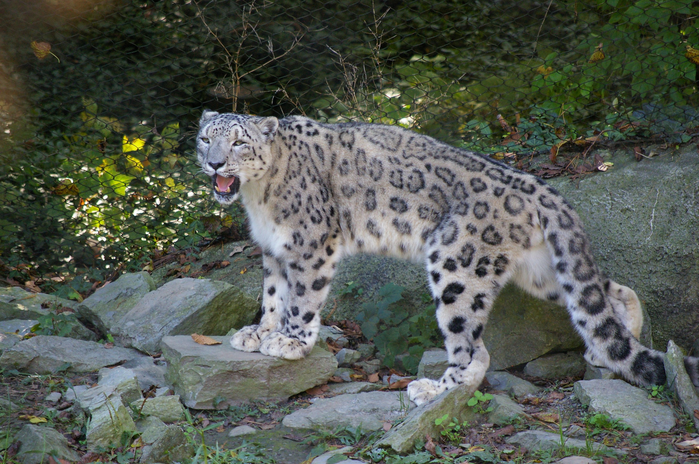
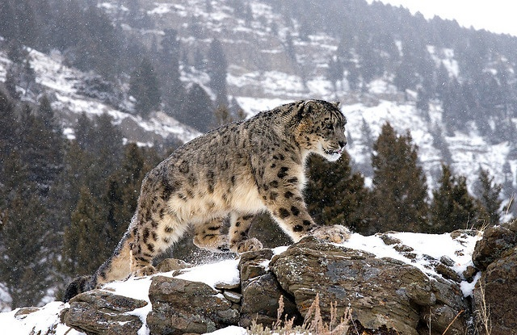
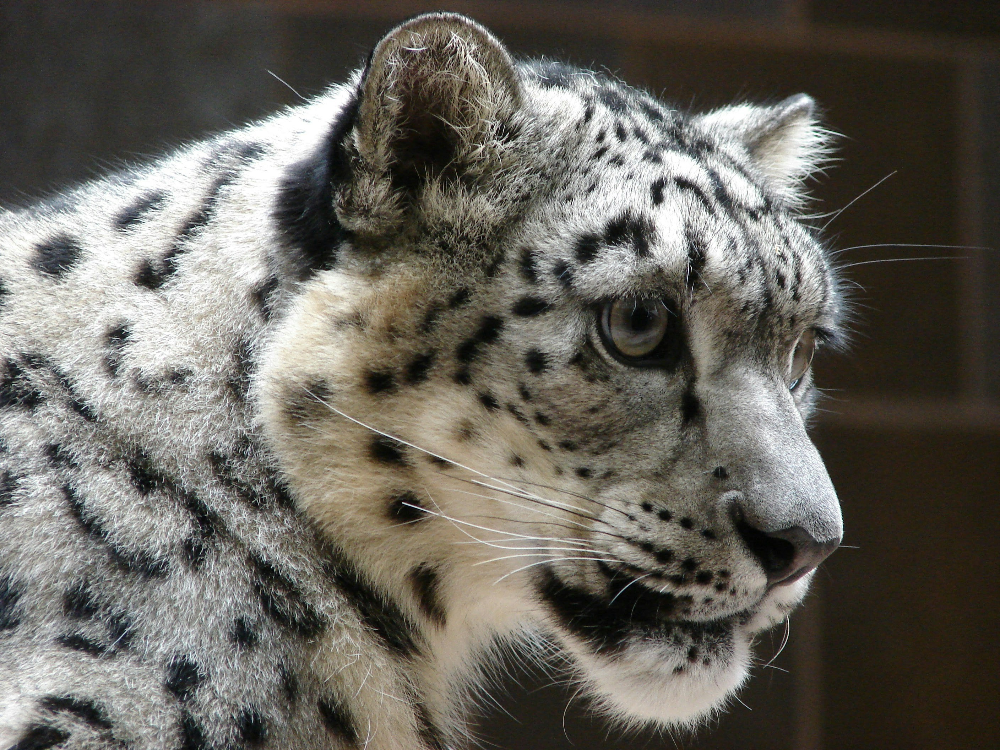
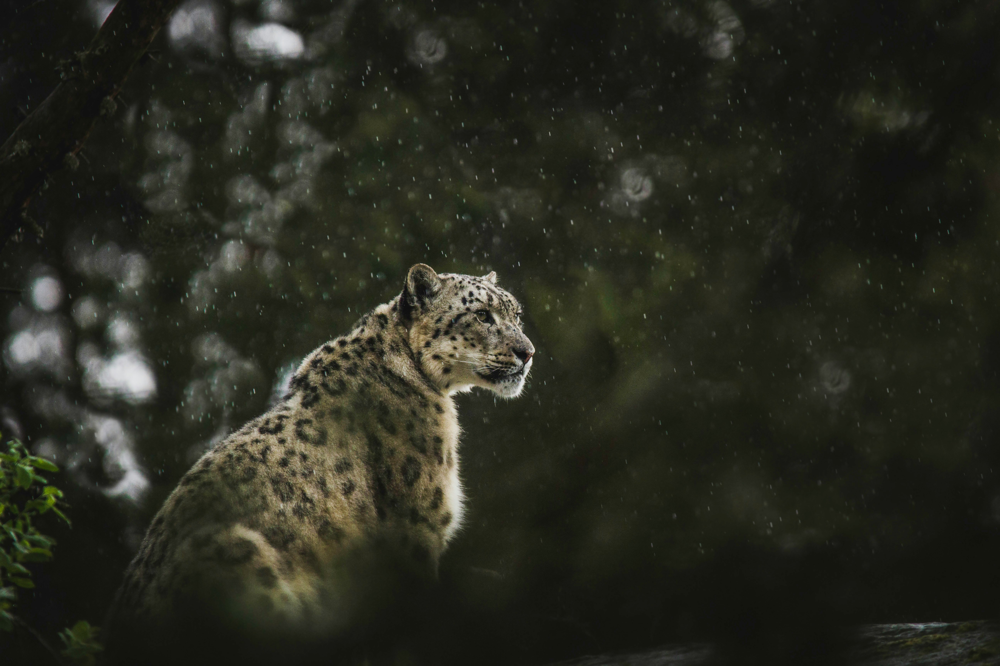

Thick, Fluffy Fur
Their dense fur and furry paws help protect them from freezing mountain temperatures.
THE BEAUTY OF THE WILD
Discovering the beauty, mystery, and importance of protecting the snow leopard.
Explore Their WorldMEET THE SNOW LEOPARD
Snow leopards are some of the most fascinating wild cats in the world. Known for their thick fur, smoky-gray coats, and incredible spotted patterns, these elusive animals are perfectly adapted to life in the mountains.

Although they may look soft and cuddly, snow leopards are powerful predators. Their strong bodies, wide paws, and long tails help them survive in some of the harshest environments on Earth.
Their thick fur keeps them warm, while their unique markings help them blend into the rocky, snowy landscapes they call home.
Snow leopards are also known as the Ghosts of the Mountains because they are incredibly elusive and difficult to spot in the wild.
LITTLE DETAILS, BIG PERSONALITY
There is so much more to these beautiful cats than meets the eye!
Their dense fur and furry paws help protect them from freezing mountain temperatures.
Their wide paws act like natural snowshoes, helping them travel across snowy terrain.
Their thick tails help with balance and can wrap around their bodies like a warm blanket.
Snow leopards are excellent climbers and can navigate steep, rocky mountain landscapes.
HOME IN THE HIMALAYAS
Snow leopards live in the high mountain ranges of Central and South Asia. Their habitat includes rocky cliffs, snowy peaks, and rugged alpine landscapes.
These environments can be extremely cold and difficult to navigate. Luckily, snow leopards have evolved remarkable adaptations that allow them to thrive in these conditions.
Their beautiful coats also provide natural camouflage, helping them blend into the rocky mountains and surrounding snow.

A PERSONAL CONNECTION

Ever since I was little, I have been fascinated by animals. I remember going to school book fairs and always picking out animal books. I loved looking through the pictures, learning about different species, and discovering things I had never known before.
Growing up around cats also made me feel especially connected to them. I have always had a soft spot for felines, which is probably why snow leopards captured my attention so much.
There is something fascinating about how snow leopards can look so fluffy, beautiful, and almost cuddly, yet they are powerful wild predators. I love their unique spotted coats and how perfectly their patterns blend into the snowy mountain landscapes they call home.
To me, they are almost like giant domestic cats living in the snow! They have been one of my favorite animals for as long as I can remember, and I think their beauty and mysterious nature make them truly unforgettable.
PROTECTING OUR WILDLIFE
Snow leopards are currently classified as Vulnerable on the IUCN Red List. Protecting them means protecting their habitats, their prey, and the communities that share their mountain environments.

Snow leopards face several challenges in the wild, including habitat loss, poaching, climate change, declining prey populations, and conflict with livestock herders.
Conservation organizations and local communities are working together to protect these animals through habitat preservation, anti-poaching efforts, research, and education.
KEEP LEARNING
Want to learn more about snow leopards and the people working to protect them? Explore these organizations.